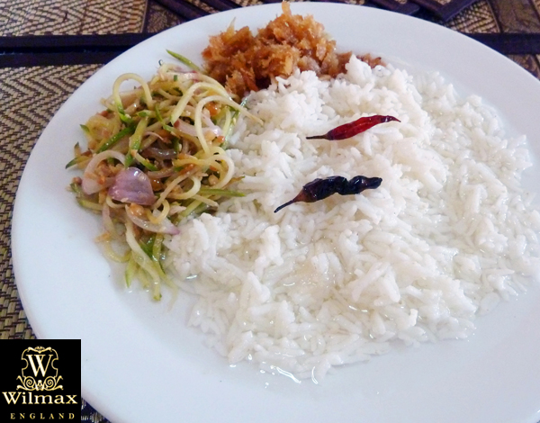
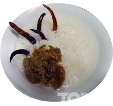

Thingyan Htamin
Ingredients
- Rice two condensed milk tins full*
- Dried fish, (Snakehead or any fleshy fish such as Spanish Mackerel) 1lb.
- Oil 10 ounces
- Onion 10, medium-sized
- Garlic a few pods
- Sesame 3 tbs.
- Fish sauce 2 tps.
- Pounded dried prawns 2 tbs.
- 3 or so (optional).
- Green (unripe) mangoes 3
- Sandalwood a few slivers.
- Beeswax a few flakes.
Instructions
- Wash rice thoroughly, put in pot, fill with water and put on stove. When the water boils and the rice is cooked, drain the starchy water. Put in more water and repeat the process twice. This is to get rid of all the starch and to cook the rice till the grains become plump and flaky.
- Drain the rice for the last time and set aside to cool. ( Usually rice is boiled till cooked and the water is drained only once, after which, the rice minus water is put back on stove to steam it to the right consistency).
- Build an open charcoal fire in a small stove. When the charcoal begins to smoulder put in sandalwood slivers and flakes of beeswax and immediately cover with a clean cooking pot set aside for the purpose. This is to infuse the pot with the aroma of the sandalwood and beeswax. When it is judged that the sandalwood and beeswax have burned out remove pot and immediately put in the cooked rice and pour drinking water to cover the rice.
- Some cover the pot with a cloth before putting in the rice so that the aroma of the sandalwood and beeswax will not escape. The rice is now ready to be served in individual bowls water and all. Some sprinkle a few buds of jasmine on the water for decorative purposes and to lend some added fragrance as well.
- Boil the dried fish till tender. Remove bones and lightly pound the meat with traditional mortar and pestle. Heat half the oil till cooked and put in garlic lightly crushed; when garlic turns slightly brown, put in pounded dried fish and fry till golden. Slice 8 onions and fry till crisp. Leave half the fried onions for the mango salad and dress the fried fish with crisp golden onions.
- Peel and grate the mangoes and wash and drain. Slice raw onions and green chilis. Put in a bowl the grated mangoes, sliced onions, roasted sesame and pounded dried prawns, sprinkle fish sauce (to taste) and mix thoroughly. Put the lot in a serving dish and top with crisp fried onions.

- The Thingyan meal, served usually for lunch or even later when the temperature is soaring, is a heart-cooling meal. The rice is fragrant, the water slakes thirst and the fried fish and mango salad lends a sharpness to wet the appetite.
